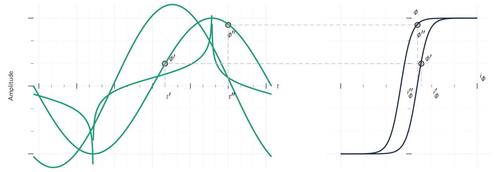
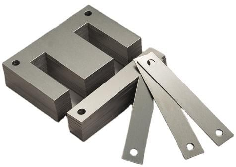
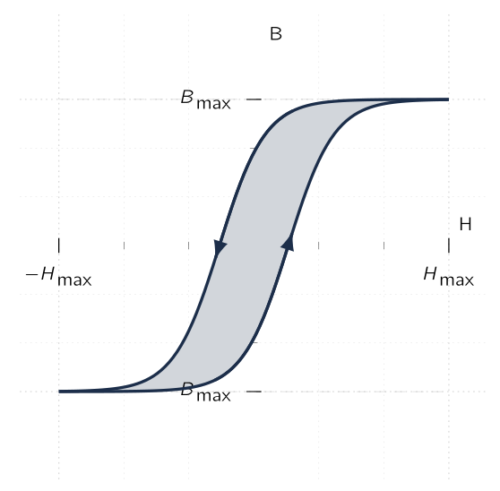
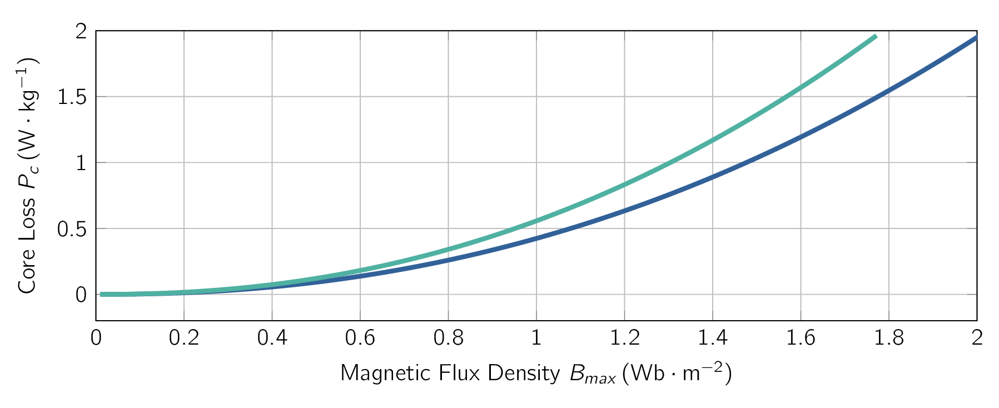

In ACAlternating CurrentAn electric current that periodically reverses direction and changes its magnitude continuously with time, in contrast to direct current (DC), which flows only in one direction. power systems, the wave-forms of voltage and flux closely approximate sinusoidal functions of time. [20] We say here closely as we must take into account environmental factors, such as noise and interference, which distorts the waveform. We will now look at the excitation characteristics and losses associated with steady-state ACAlternating CurrentAn electric current that periodically reverses direction and changes its magnitude continuously with time, in contrast to direct current (DC), which flows only in one direction. operation of magnetic materials under such operating conditions. We use as our model a closed-core magnetic circuit, [21] This means our circuit has no air gap. such as that shown in Fig. 1.2. The magnetic path length is , and the cross-sectional area is throughout the length of the core.
We further assume a sinusoidal variation of the core flux , which gives:
| (1.42) |
where,
-
is the amplitude of core flux (),
-
is the amplitude of flux density (),
-
is the angular frequency defined as , and
-
is the frequency ().
From Eq. (1.22) , the voltage induced in the -turn winding is:
| (1.43) |
where
| (1.44) |
In steady-state ACAlternating CurrentAn electric current that periodically reverses direction and changes its magnitude continuously with time, in contrast to direct current (DC), which flows only in one direction. operation, we usually are more interested in the RMSRoot-Mean SquareEquivalent direct current (DC) voltage of an alternating current (AC) source. values of voltages and currents than their instantaneous or maximum values. In general, the RMSRoot-Mean SquareEquivalent direct current (DC) voltage of an alternating current (AC) source. value of a periodic function of time, say , of period is defined as:
| (1.45) |
From Eq. (1.45) , the RMSRoot-Mean SquareEquivalent direct current (DC) voltage of an alternating current (AC) source. value of a sine wave can be shown to be times its peak value. Therefore, the RMSRoot-Mean SquareEquivalent direct current (DC) voltage of an alternating current (AC) source. value of the induced voltage is:
| (1.46) |
An excitation current , corresponding to an excitation MMFMagneto-motive ForceThe magnetic pressure which drives magnetic flux in a magnetic circuit, and is the work done to move a unit magnetic pole. , is required to produce the flux in the core.
Because of the non-linear magnetic properties of the core, the excitation current corresponding to a sinusoidal core flux will be non-sinusoidal.
As and are related to and by known geometric constants, the ACAlternating CurrentAn electric current that periodically reverses direction and changes its magnitude continuously with time, in contrast to direct current (DC), which flows only in one direction. hysteresis loop of Fig. 1.8 has been drawn in terms of and is = . The sine waves of induced voltage (), and flux (), are shown in the left side of Fig. 1.8.

At any given time, the value of corresponding to the given value of flux can be found directly from the hysteresis loop.
As an example, at time the flux is and the current is , and at time the corresponding values are and . Please observe that since the hysteresis loop is multi-valued, it is necessary to be careful to pick the rising-flux values from the rising-flux portion of the hysteresis loop. In the same context, the falling-flux portion of the hysteresis loop must be selected for the falling-flux values.
A second point worth mentioning is, due to the hysteresis loop “flattening out” from the saturation effects, the waveform of the exciting current is sharply peaked. Its RMSRoot-Mean SquareEquivalent direct current (DC) voltage of an alternating current (AC) source. value defined by Eq. (1.45) , where is the period of a cycle. It is related to the corresponding RMSRoot-Mean SquareEquivalent direct current (DC) voltage of an alternating current (AC) source. value of by the relationship:
| (1.47) |
The ACAlternating CurrentAn electric current that periodically reverses direction and changes its magnitude continuously with time, in contrast to direct current (DC), which flows only in one direction. excitation characteristics of core materials are often described in terms of RMSRoot-Mean SquareEquivalent direct current (DC) voltage of an alternating current (AC) source. volt-amperes () rather than a magnetisation curve relating and . The theory behind this representation can be explained by combining Eq. (1.47) and Eq. (1.48) . Therefore, from Eq. (1.47) , and Eq. (1.48) the RMSRoot-Mean SquareEquivalent direct current (DC) voltage of an alternating current (AC) source. volt-amperes required to excite the core of Fig. 1.2 to a specified flux density is equal to
In Eq. (1.48) , the product can be seen to be equal to the volume of the core and hence the RMSRoot-Mean SquareEquivalent direct current (DC) voltage of an alternating current (AC) source. exciting volt-amperes required to excite the core with sinusoidal can be seen to be proportional to the frequency of excitation, the core volume and the product of the peak flux density and the RMSRoot-Mean SquareEquivalent direct current (DC) voltage of an alternating current (AC) source. magnetic field intensity. For a magnetic material of mass density , the mass of the core is and the exciting RMSRoot-Mean SquareEquivalent direct current (DC) voltage of an alternating current (AC) source. voltamperes per unit mass, , can be expressed as
| (1.49) |
Observe that excitation of the material really depends on frequency and . As a result, the ac excitation requirements for a magnetic material are often supplied by manufacturers in terms of RMSRoot-Mean SquareEquivalent direct current (DC) voltage of an alternating current (AC) source. voltamperes per unit weight as determined by laboratory tests on closed-core samples of the material. The exciting current supplies the MMFMagneto-motive ForceThe magnetic pressure which drives magnetic flux in a magnetic circuit, and is the work done to move a unit magnetic pole. required to produce the core flux and the power input associated with the energy in the magnetic field in the core. Part of this energy is dissipated as losses and results in heating of the core. The rest appears as reactive power associated with energy storage in the magnetic field. This reactive power is not dissipated in the core; it is cyclically supplied and absorbed by the excitation source. There are two (2) loss mechanisms are associated with time-varying fluxes in magnetic materials.
Eddy Current Losses The first is ohmic () heating, associated with induced currents in the core material. From Faraday’s law ( Eq. (1.22) ) we see that time-varying magnetic fields give rise to electric fields. In magnetic materials, these electric fields result in induced currents, commonly referred to as eddy currents, which circulate in the core material and oppose changes in flux density in the material. To counteract the corresponding demagnetising effect, the current in the exciting winding must increase.
This causes the resultant “dynamic” B-H loop under ac operation to become somewhat “fatter” than the hysteresis loop for slowly varying conditions, and this effect increases as the excitation frequency is increased.
It is for this reason that the characteristics of electrical steels vary with frequency and therefore manufacturers typically supply characteristics over the expected operating frequency range of a particular electrical steel.
To reduce the effects of eddy currents, magnetic structures are usually built of thin sheets of
laminations of the magnetic material. [22] 
The thinner the laminations, the lower the losses.
In general, eddy-current loss tends to increase as the square of the excitation frequency and also as the square of the peak flux density.
Hysteresis Losses The second loss mechanism is due to the hysteretic nature of magnetic material. In a magnetic circuit similar to Fig. 1.2, a time-varying excitation will cause the magnetic material to undergo a cyclic variation described by a hysteresis loop such as that shown in Fig. 1.9.
We can use Eq. (1.40) to calculate the energy input to the magnetic core of Fig. 1.2 as the material undergoes a single cycle:
| (1.50) |

Looking at Eq. (1.50) , we see that is the volume of the core and the integral is the area of the ACAlternating CurrentAn electric current that periodically reverses direction and changes its magnitude continuously with time, in contrast to direct current (DC), which flows only in one direction. hysteresis loop, and we see each time the magnetic material undergoes a cycle, there is a net energy input into the material. This energy is required to move around the magnetic dipoles in the material and is dissipated as heat in the material.
Therefore for a given flux level, the corresponding hysteresis losses are proportional to the area of the hysteresis loop and to the total volume of material.
Since there is an energy loss per cycle, hysteresis power loss is proportional to the frequency of the applied excitation.
In general, these losses depend on the metallurgy of the material as well as the flux density and frequency. Information on core loss is typically presented in graphical form. It is plotted in terms of watts per unit weight as a function of flux density; often a family of curves for different frequencies are given. Fig. 1.10 shows the core loss () for M130-27S grain-oriented electrical steel at and .

Nearly all transformers and certain sections of electric machines use sheet-steel material that has highly favourable directions of magnetisation along which the core loss is low and the permeability is high. This material is termed grain-oriented steel.
The reason for this property lies in the atomic structure of a crystal of the silicon-iron alloy, which is a body-centred cube. Each cube has an atom at each comer as well as one in the centre of the cube. In the cube, the easiest axis of magnetisation is the cube edge; the diagonal across the cube face is more difficult, and the diagonal through the cube is the most difficult. By suitable manufacturing techniques most of the crystalline cube edges are aligned in the rolling direction to make it the favourable direction of magnetisation. The behaviour in this direction is superior in core loss and permeability to non-oriented steels in which the crystals are randomly oriented to produce a material with characteristics which are uniform in all directions. As a result, oriented steels can be operated at higher flux densities than the non-oriented grades.
Non-oriented electrical steels are used in applications where the flux does not follow a path which can be oriented with the rolling direction or where low cost is of importance. In these steels the losses are somewhat higher and the permeability is very much lower than in grain-oriented steels.
-
¶
- MMFMagneto-motive Force
The magnetic pressure which drives magnetic flux in a magnetic circuit, and is the work done to move a unit magnetic pole.
-
¶
- RMSRoot-Mean Square
Equivalent direct current (DC) voltage of an alternating current (AC) source.
-
¶
- ACAlternating Current
An electric current that periodically reverses direction and changes its magnitude continuously with time, in contrast to direct current (DC), which flows only in one direction.